Thesis. Shepard ρ (full, p=100) reflects global-structure reproduction. But in high dimensions distances concentrate, so most pairs sit at large distances and the full ρ is dominated by far pairs — the accuracy of near distances is buried. We therefore restrict ρ to cumulative distance bands; p=5 = the globally-nearest 5% of pairs isolates near-neighbor descriptive power. Crucially the band uses a fixed absolute radius for every point, so it is fair. recall@k instead takes each point's own k nearest (a variable radius): it over-penalizes near-ties in dense regions and is favorable to k-NN-based methods (t-SNE/UMAP) — it is not a fair neighborhood evaluation, and is shown only as a reference. Best value per column is highlighted; bracketed ranges are bootstrap 95% CIs over seeds (deterministic methods show a point value).
PRIMARY · band-Shepard (fixed-radius, fair)REFERENCE · recall@k etc. (variable-radius k-NN, biased) p=5 near → p=100 global. The two groups are colored accordingly in every table below.
Headline finding. PCC crushes dense clusters to points. It over-compresses the within-cluster scale by ≈50× (density) and ≈9× (clusters) relative to the truth (≈1×), destroying each cluster's internal structure — even though its global ρ (full) stays high (it is the highest only on density; toorPIA leads the global ρ on clusters and transition). toorPIA preserves the within-cluster scale (≈0.4–0.6×) across all three datasets. This scale collapse is invisible to the rank-based Shepard ρ (which is scale-invariant) but is obvious in the Shepard density plots below and is quantified by the over-compression column. toorPIA tops the composite (near + global) ranking on all three original datasets. The fourth dataset (outliers) asks a different, single-point question — whether one far-away point stays separated — scored by the standard Shepard/stress blocks plus a plain-geometry pair-angle column. There, toorPIA keeps same-kind anomaly pairs co-directional (angle ≤ 10°) with three kinds at three separate places, and in the addplot out-of-sample test (monitoring on an anomaly-free basemap) it is the only method that plots a never-seen anomaly outside the normal region at all — and its direction points back to the source cluster; UMAP preserves pairs best in raw terms but attaches them to bulk-cluster edges; t-SNE fuses each pair into one point; PCC tears same-kind pairs apart (cohesion ≈650, angles ≈86°); PCA/Isomap send pair members to opposite sides; and t-SNE / PyMDE / PCC cannot perform the add-data operation at all.
New here? This benchmark asks one question: when a dimensionality-reduction (DR) method squashes high-dimensional data into a 2-D picture, how faithfully does it keep the original distances between points? We run seven methods on synthetic data whose true geometry is known, so each method can be scored against the truth. A good method keeps near distances (fine, within-cluster structure) and far distances (the global layout). Below we explain how we measure that — and why the metric the DR literature usually reaches for is misleading — then show the results dataset by dataset.
The classic global score is the Shepard ρ: the rank correlation between every pair's high-D distance and its 2-D distance. The catch is distance concentration — in high dimensions almost every pair of points sits at a similar mid-to-far distance, and only a thin sliver of pairs are genuinely close. In the plot below (the clusters dataset) the near band (p≤5, green) is a small left-hand tail, while the bulk of the ≈500,000 pairs piles up far away. Because the full ρ ranks all pairs together and only ~5% are near, near-distance errors are out-voted about 19:1 and averaged away. A method can crush every cluster to a blob yet still post a near-perfect full ρ. To actually see near-neighbor fidelity we restrict ρ to the near band (p=5): the nearest 5% of pairs, judged on one fixed distance radius.
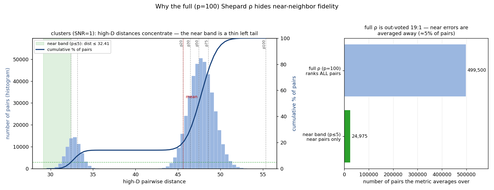
The DR literature's usual local metric is recall@k (and its cousins trustworthiness and continuity): for each point, how many of its k high-D nearest neighbors are still neighbors in 2-D. Two structural choices make it an unfair test of distance fidelity. (1) Variable radius — with a fixed k, a point in a dense region encloses its k neighbors in a tiny radius while a point in a sparse region needs a much larger one (panel 1), so every point is judged on a different distance scale; on real data that radius genuinely varies point-to-point (panel 3). (2) Hard 0/1 threshold — the k-th and (k+1)-th neighbors can be almost equidistant, yet one counts fully and the other not at all (panel 2): a tiny coordinate wobble flips membership and the score jumps, even though the actual distances barely moved. Both choices make recall@k structurally favorable to neighbor-graph methods (t-SNE / UMAP) and a poor measure of faithful near-distance reproduction. The fixed-radius near-band Shepard ρ (p=5) uses the same radius for every point and scores by actual distance, so it has neither problem. We keep recall@k only as a labelled reference column.
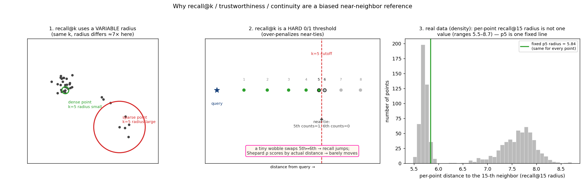
Each per-dataset table has four column groups, left to right: Ranking score (composite points — for full ρ and for p5 ρ the 1st→5th method scores 5→1 points; Σ is their sum and rows are sorted by Σ); immediately beside it the PRIMARY band-Shepard ρ block (fixed-radius, fair — full·global and p5·near) that the ranking score is computed from; then Within-cluster scale (the over-compression ×); and the REFERENCE recall@k block (variable-radius k-NN, biased — greyed out). In every column the best value is green and the worst is light red. A darker red (regardless of rank) flags an outright failure: a negative near-band p5 ρ, an over-compression > 2×, or a negative anomaly-pair ρ. Bracketed ranges are bootstrap 95% CIs over seeds (deterministic methods show a single value). The outliers dataset adds a purple outlier ρ column — the standard Shepard ρ restricted to the anomaly-involving pairs — and a third ranking column scored on it (1st→5 … 5th→1), so the composite Σ there is full + p5 + outlier.
Non-uniform density (uniform + tight core + sparse shell). Tests density distortion and the recall@k bias; distance-preservers should win the global/near Shepard bands.
| method | Ranking score (1st→5 … 5th→1 pts) | Band-Shepard ρ — fixed-radius, fair (PRIMARY) | Within-cluster scale (×over-compression; ≫1 = clusters crushed to points) | Reference — k-NN-favorable, biased (not a fair neighborhood test) | |||||
|---|---|---|---|---|---|---|---|---|---|
| full pts | p5 pts | Σ | full · global | p5 · near-neighbor | over-compression × | recall@15 | trust@15 | continuity@15 | |
| toorPIA | 4 | 4 | 8 | 0.786 | 0.166 [0.165, 0.166] | 0.363 | 0.067 | 0.625 [0.625, 0.625] | 0.820 |
| PCC | 5 | 0 | 5 | 0.820 [0.816, 0.824] | -0.028 [-0.053, -0.009] | 51.515 [50.884, 51.712] | 0.056 [0.055, 0.059] | 0.603 [0.593, 0.604] | 0.753 [0.749, 0.759] |
| PyMDE | 2 | 3 | 5 | 0.598 [0.598, 0.608] | 0.138 [0.116, 0.151] | 0.229 [0.224, 0.231] | 0.043 [0.041, 0.047] | 0.568 [0.567, 0.570] | 0.634 [0.632, 0.646] |
| t-SNE | 0 | 5 | 5 | 0.300 [0.277, 0.309] | 0.189 [0.188, 0.192] | 0.285 [0.285, 0.291] | 0.254 [0.250, 0.259] | 0.773 [0.770, 0.779] | 0.803 [0.798, 0.803] |
| PCA | 3 | 1 | 4 | 0.699 | 0.033 | 0.603 | 0.069 | 0.628 | 0.785 |
| UMAP | 0 | 2 | 2 | 0.156 [0.154, 0.162] | 0.109 [0.107, 0.117] | 0.428 [0.423, 0.437] | 0.210 [0.206, 0.213] | 0.733 [0.729, 0.734] | 0.813 [0.812, 0.815] |
| Isomap | 1 | 0 | 1 | 0.559 | 0.005 | 0.368 | 0.060 | 0.601 | 0.776 |
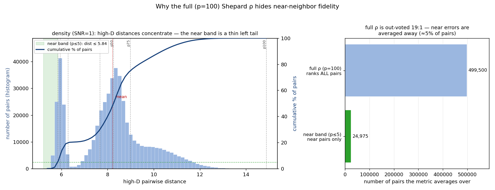
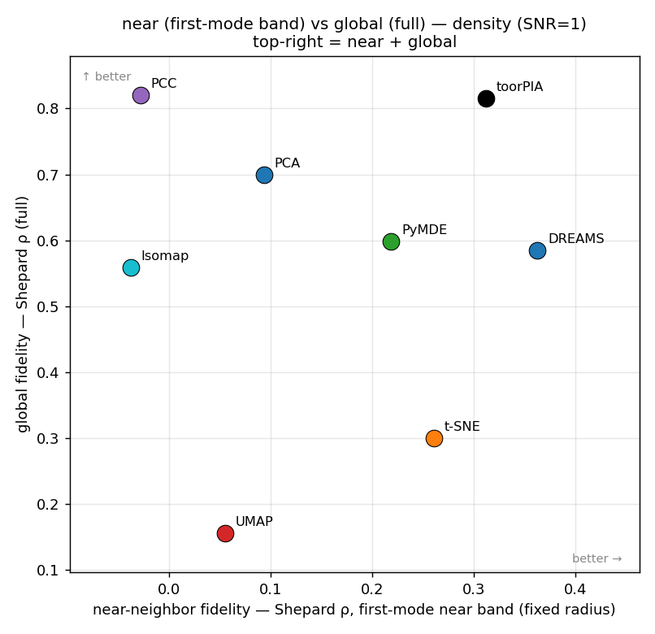
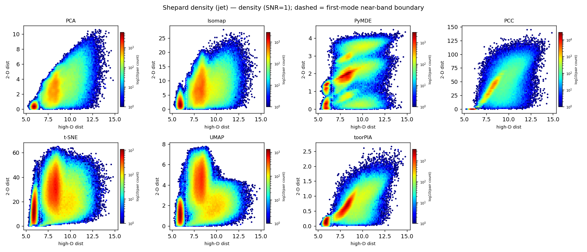
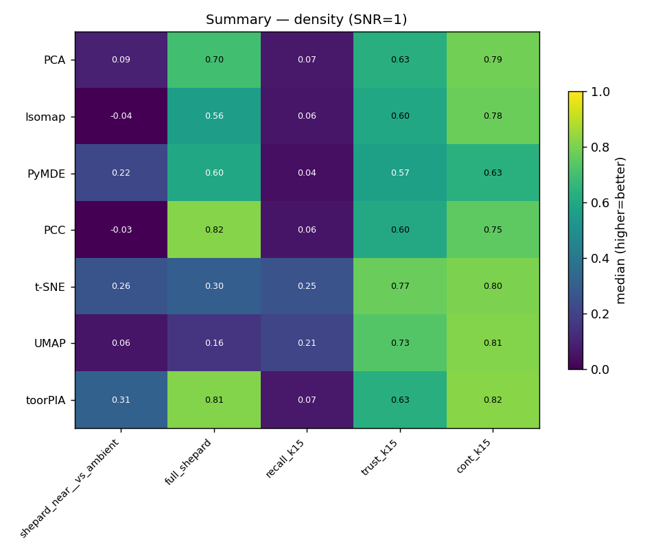
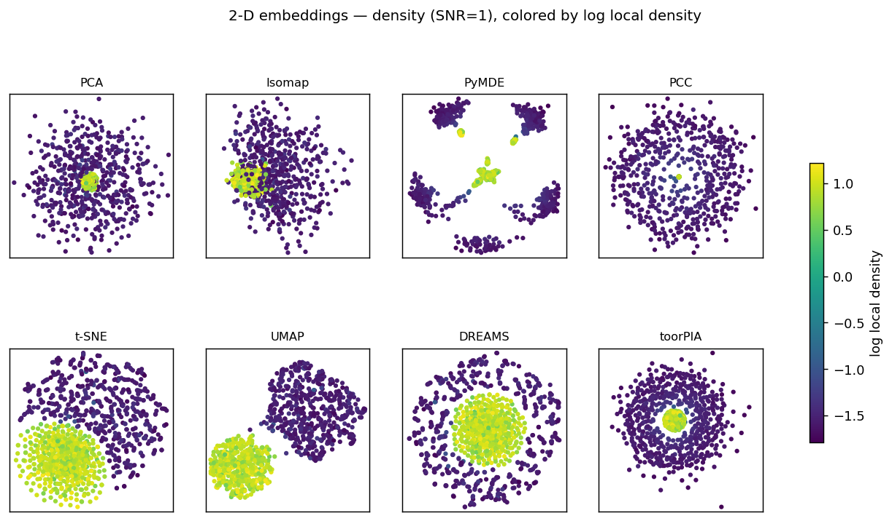
Distinct dense sub-populations in a high-dimensional feature space (7 well-separated dense clusters). Tests whether a method keeps the fine within-cluster structure while also placing the clusters correctly.
| method | Ranking score (1st→5 … 5th→1 pts) | Band-Shepard ρ — fixed-radius, fair (PRIMARY) | Within-cluster scale (×over-compression; ≫1 = clusters crushed to points) | Reference — k-NN-favorable, biased (not a fair neighborhood test) | |||||
|---|---|---|---|---|---|---|---|---|---|
| full pts | p5 pts | Σ | full · global | p5 · near-neighbor | over-compression × | recall@15 | trust@15 | continuity@15 | |
| toorPIA | 5 | 3 | 8 | 0.550 | 0.112 | 0.593 | 0.137 | 0.949 | 0.953 |
| t-SNE | 1 | 5 | 6 | 0.367 [0.364, 0.374] | 0.311 [0.308, 0.320] | 1.924 [1.910, 1.952] | 0.270 [0.263, 0.271] | 0.959 | 0.967 [0.967, 0.968] |
| PyMDE | 4 | 0 | 4 | 0.493 [0.423, 0.519] | 0.057 [0.042, 0.058] | 1.390 [1.328, 1.545] | 0.075 [0.073, 0.087] | 0.758 [0.736, 0.798] | 0.827 [0.782, 0.864] |
| PCC | 3 | 1 | 4 | 0.476 [0.456, 0.480] | 0.065 [0.045, 0.079] | 8.902 [8.161, 10.466] | 0.123 [0.123, 0.128] | 0.945 | 0.947 [0.947, 0.948] |
| PCA | 2 | 2 | 4 | 0.464 | 0.069 | 0.988 | 0.127 | 0.915 | 0.938 |
| UMAP | 0 | 4 | 4 | 0.359 [0.345, 0.366] | 0.173 [0.168, 0.174] | 3.600 [3.529, 3.751] | 0.196 [0.189, 0.198] | 0.949 [0.948, 0.949] | 0.956 [0.956, 0.957] |
| Isomap | 0 | 0 | 0 | 0.337 | -0.014 | 0.457 | 0.089 | 0.869 | 0.885 |
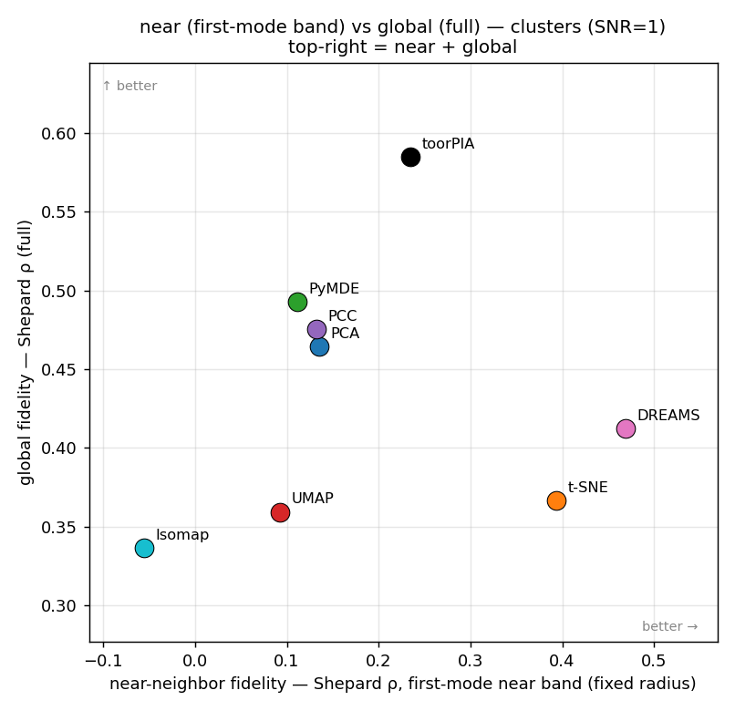
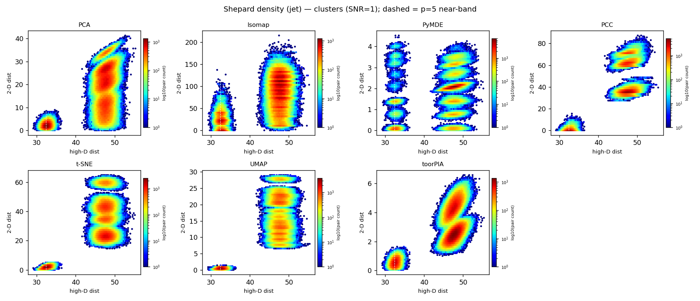
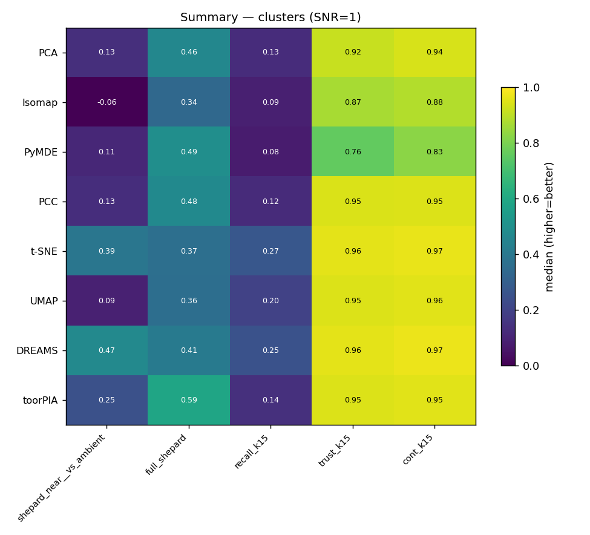
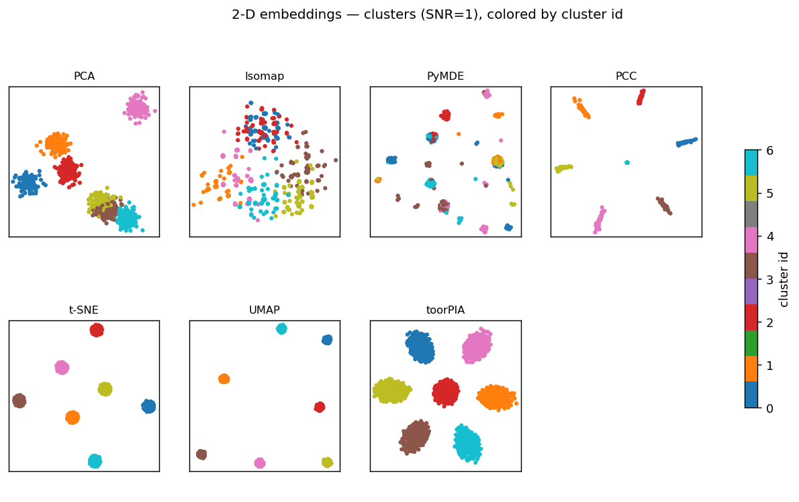
Continuous transition: dense clusters CONNECTED by bridge regions. The bridges (plus SNR=1 noise) dilute the within-cluster over-compression here — PCC's clusters are squeezed but not to points (≈79× when clean, milder under noise). Included to show the effect is weaker when clusters are connected; toorPIA still preserves scale and leads the global ρ.
| method | Ranking score (1st→5 … 5th→1 pts) | Band-Shepard ρ — fixed-radius, fair (PRIMARY) | Within-cluster scale (×over-compression; ≫1 = clusters crushed to points) | Reference — k-NN-favorable, biased (not a fair neighborhood test) | |||||
|---|---|---|---|---|---|---|---|---|---|
| full pts | p5 pts | Σ | full · global | p5 · near-neighbor | over-compression × | recall@15 | trust@15 | continuity@15 | |
| toorPIA | 5 | 3 | 8 | 0.719 | 0.143 | 0.564 | 0.226 | 0.964 | 0.965 |
| t-SNE | 2 | 5 | 7 | 0.556 [0.501, 0.559] | 0.329 [0.329, 0.333] | 1.207 [1.194, 1.227] | 0.363 [0.363, 0.364] | 0.974 | 0.976 [0.974, 0.976] |
| PCC | 4 | 2 | 6 | 0.640 [0.639, 0.648] | 0.143 [0.139, 0.146] | 2.220 [2.173, 2.284] | 0.204 [0.203, 0.209] | 0.947 [0.947, 0.948] | 0.962 [0.962, 0.964] |
| PCA | 3 | 1 | 4 | 0.556 | 0.136 | 0.925 | 0.182 | 0.948 | 0.956 |
| UMAP | 0 | 4 | 4 | 0.483 [0.473, 0.491] | 0.171 [0.162, 0.177] | 2.813 [2.596, 2.873] | 0.292 [0.288, 0.296] | 0.966 [0.966, 0.967] | 0.968 [0.968, 0.968] |
| PyMDE | 1 | 0 | 1 | 0.540 [0.423, 0.581] | 0.073 [0.043, 0.093] | 0.624 [0.173, 1.811] | 0.155 [0.142, 0.157] | 0.823 [0.810, 0.833] | 0.841 [0.711, 0.853] |
| Isomap | 0 | 0 | 0 | 0.533 | 0.008 | 1.155 | 0.204 | 0.960 | 0.961 |
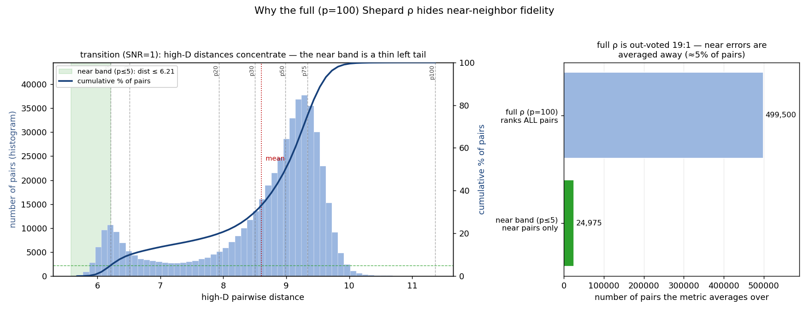
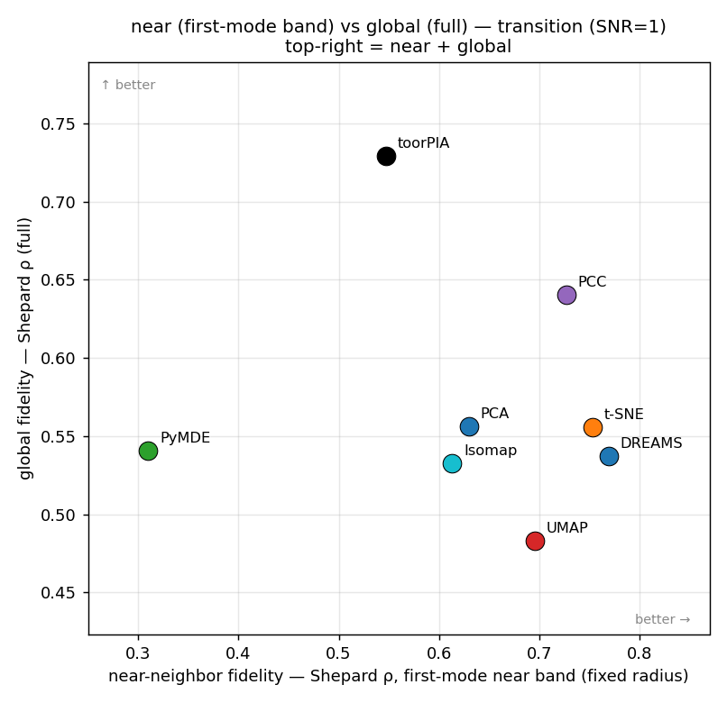
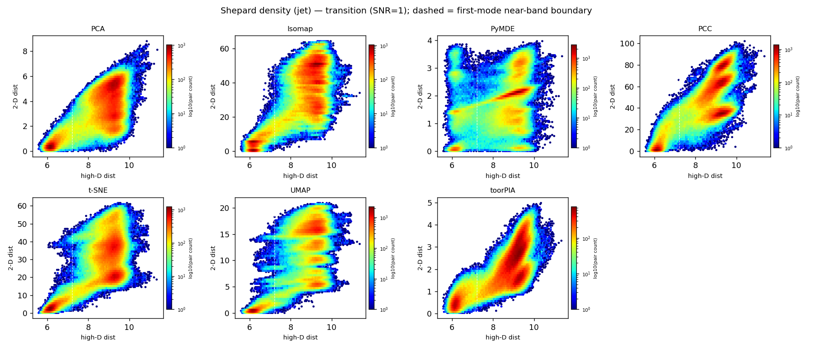
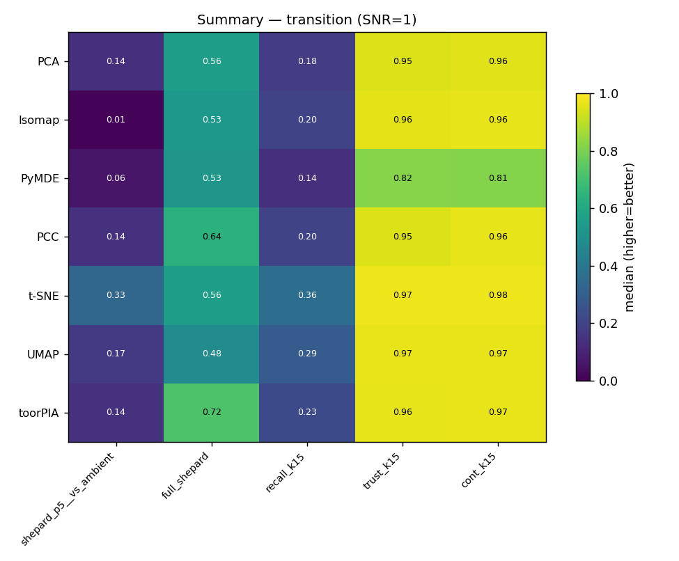
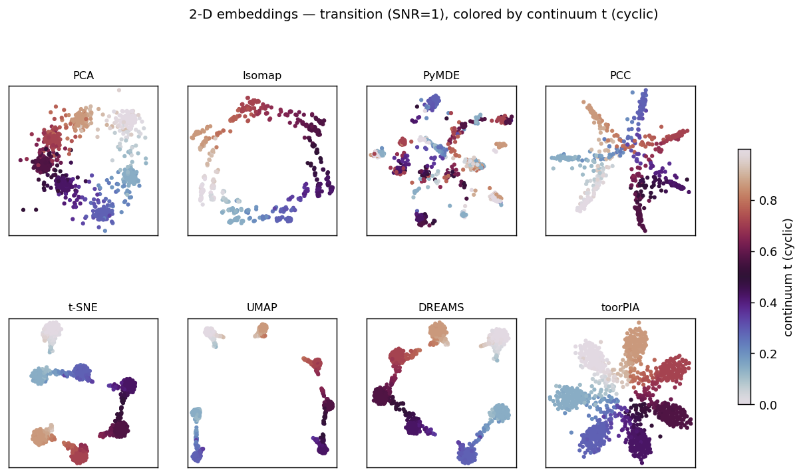
Bulk of dense clusters plus 3 anomalous DIRECTIONS × 2 near-duplicate outliers each, at outlier_factor × Rg (bulk radius of gyration) along dedicated directions orthogonal to the bulk's subspace (modeled on a real contamination case: images acquired under a different condition hiding in a feature set). Read it from the two figures first: the Shepard density panel (high-D vs 2-D distance — the outlier-related pair blocks are directly visible, and violations such as same-kind pairs thrown to huge 2-D distances or far pairs collapsed to 0 show up as off-trend blocks) and the star gallery (outliers colored by direction; a/b = the near-duplicate pair). The quantitative anchor is the same standard statistic as everywhere else: the Shepard ρ restricted to the ANOMALY-INVOLVING pairs (the 'outlier ρ' column) — it scores exactly the blocks the density panel shows and feeds the ranking score as a third 5..1 column, so a method that plots its anomalies among other clusters or fuses/tears same-kind pairs scores low there no matter how well it orders the pairs among the normal points.
| method | Ranking score (1st→5 … 5th→1 pts) | Band-Shepard ρ — fixed-radius, fair (PRIMARY) | Within-cluster scale (×over-compression; ≫1 = clusters crushed to points) | Reference — k-NN-favorable, biased (not a fair neighborhood test) | Outlier pairs — standard Shepard ρ over anomaly-involving pairs | ||||||
|---|---|---|---|---|---|---|---|---|---|---|---|
| full pts | p5 pts | outlier pts | Σ | full · global | p5 · near-neighbor | over-compression × | recall@15 | trust@15 | continuity@15 | outlier ρ | |
| toorPIA | 5 | 3 | 5 | 13 | 0.755 | 0.113 | 0.853 | 0.127 | 0.927 | 0.934 | 0.254 |
| PCA | 3 | 2 | 4 | 9 | 0.585 | 0.104 | 1.548 | 0.104 | 0.845 | 0.906 | 0.156 |
| PCC | 4 | 1 | 3 | 8 | 0.707 [0.696, 0.708] | 0.094 [0.093, 0.098] | 2.253 [2.246, 2.318] | 0.125 [0.125, 0.127] | 0.926 [0.926, 0.926] | 0.933 | 0.154 [0.114, 0.164] |
| t-SNE | 0 | 5 | 1 | 6 | 0.481 [0.480, 0.502] | 0.270 [0.266, 0.272] | 2.675 [2.558, 2.861] | 0.247 [0.246, 0.250] | 0.944 [0.943, 0.945] | 0.952 [0.951, 0.952] | 0.083 [0.047, 0.136] |
| UMAP | 0 | 4 | 0 | 4 | 0.464 [0.459, 0.475] | 0.184 [0.177, 0.189] | 5.197 [4.903, 6.193] | 0.182 [0.180, 0.182] | 0.929 [0.929, 0.930] | 0.941 [0.940, 0.941] | 0.062 [-0.005, 0.111] |
| Isomap | 1 | 0 | 2 | 3 | 0.490 | 0.035 | 2.223 | 0.089 | 0.907 | 0.912 | 0.153 |
| PyMDE | 2 | 0 | 0 | 2 | 0.527 [0.506, 0.580] | 0.049 [0.045, 0.051] | 0.686 [0.613, 0.751] | 0.095 [0.090, 0.096] | 0.837 [0.823, 0.846] | 0.797 [0.777, 0.829] | 0.033 [0.006, 0.035] |
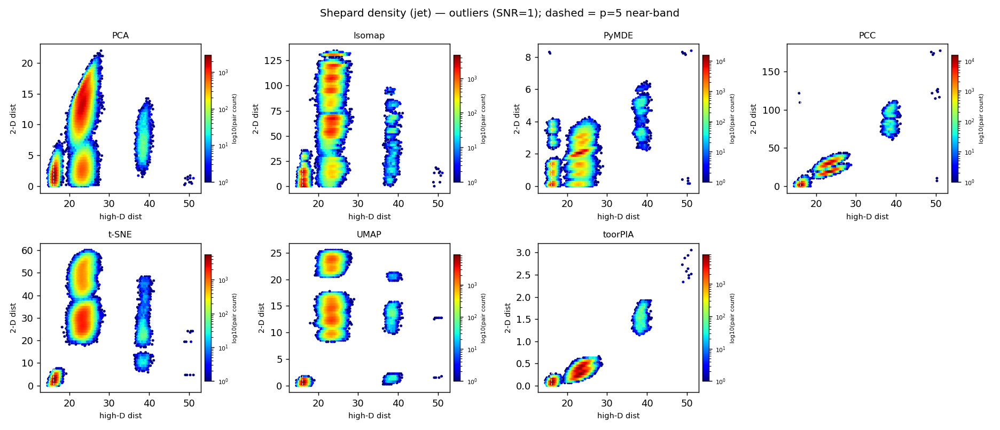
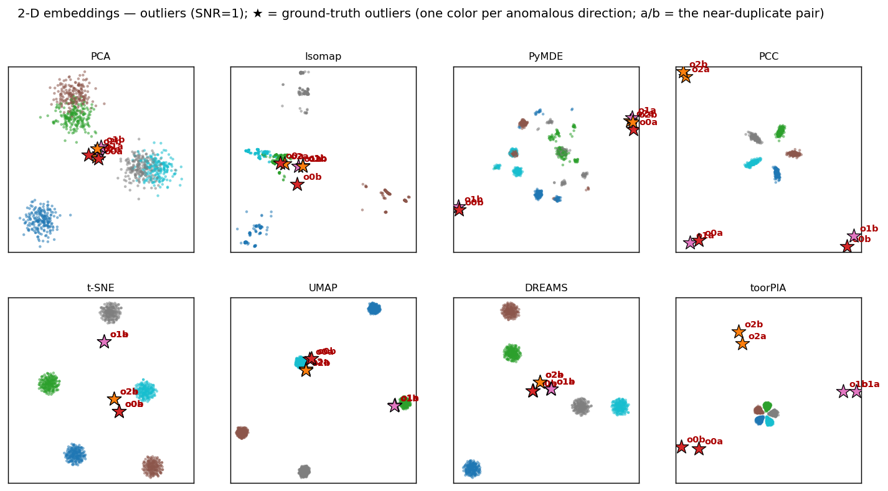
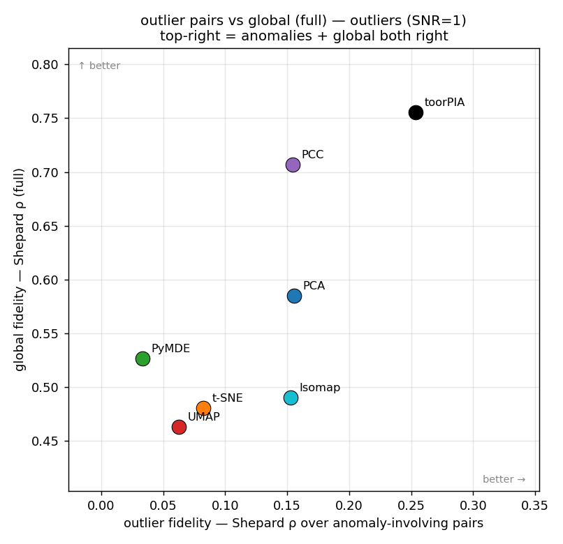
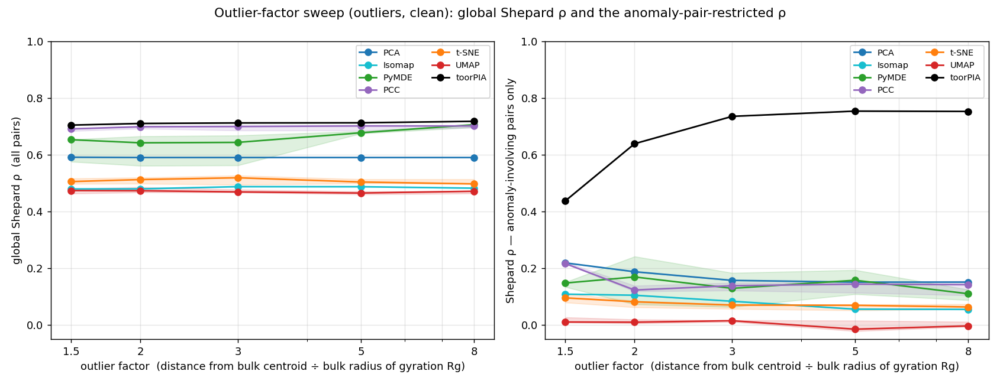
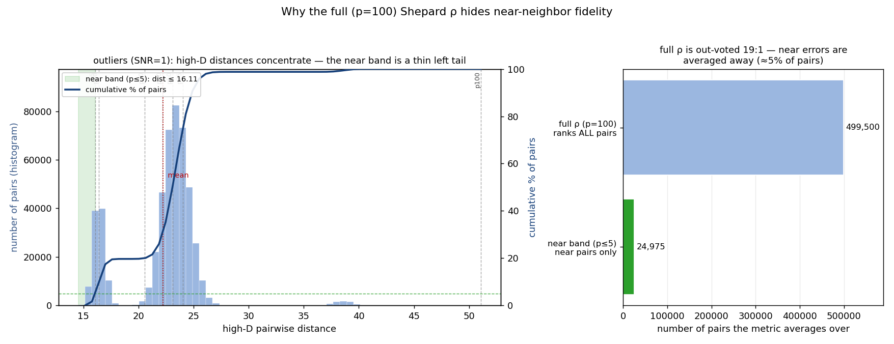
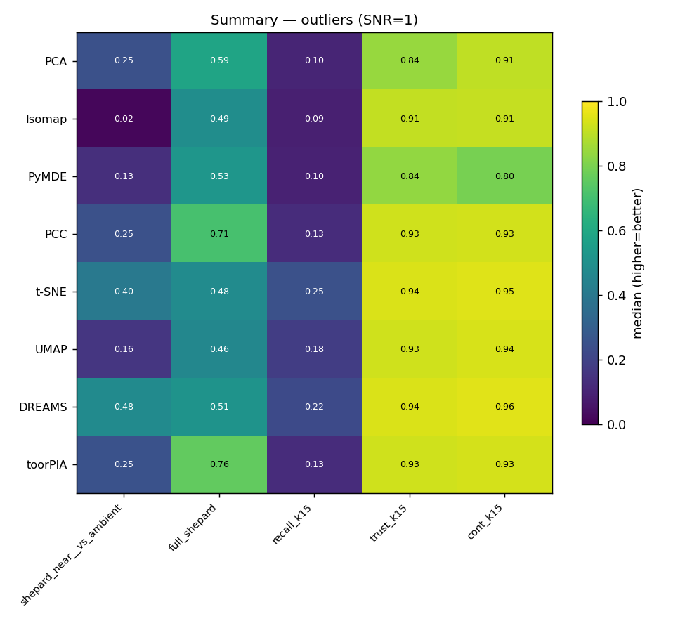
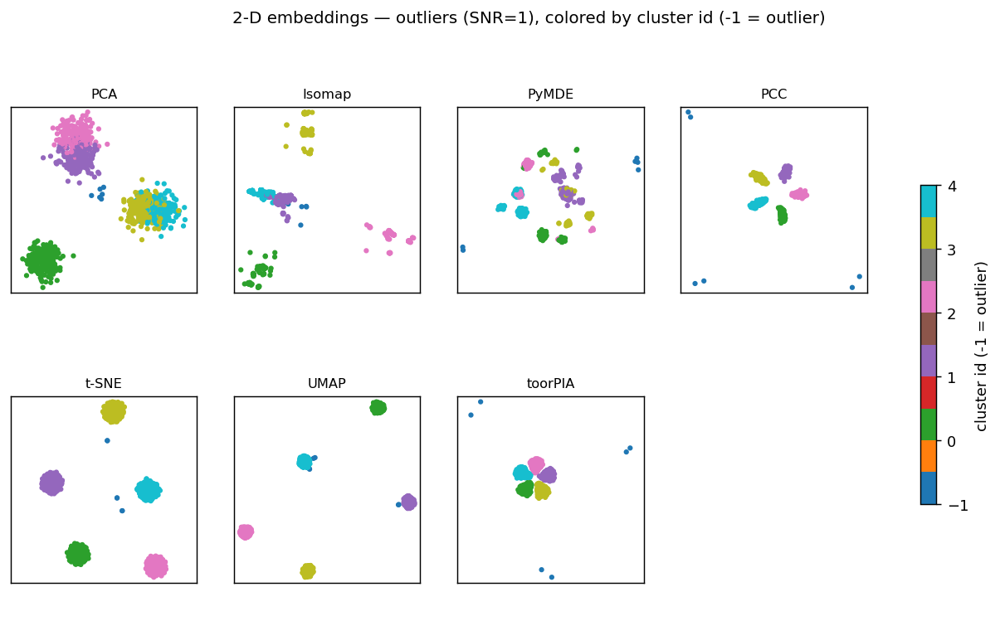
Theme: minority-structure preservation under data imbalance. An IMBALANCED pair of populations, each with internal cluster structure: a majority (5 dense clusters) and a much smaller minority (the same 5-cluster geometry, fewer points — default 5%, i.e. 95% vs 5%), placed in disjoint dimension regions and separated so that every cross-population center distance is exactly group_range (=2) × the within-population center distance. Models a ubiquitous real situation: normal production data mixed with a rarely-used operating mode, a main line vs a small pilot-lot series, data before/after an instrument change, or a large healthy cohort vs a small patient group with subtypes. In a real project this composition is UNKNOWN in advance, and the minority is very often the actual object of the analysis (anomaly analysis, positive cases in medical data, transient operating states of a process) — so extracting it from the map needs two readings positive AT ONCE: is the minority drawn as a recognizable separate group (cross-population ρ), and does it KEEP a trustworthy internal structure despite having few points (minority-internal ρ)? A method that fails either one cannot be used for this ubiquitous task. The gallery (circles = majority, triangles = minority) shows both at a glance; the sweep curve reads exactly like the outliers dataset's: global Shepard ρ next to the SAME standard ρ restricted to the minority-involving pairs ([minority]-[minority] plus [minority]-[majority] — one number that drops if either reading fails). Beware the failure is SILENT: the global ρ (left panel, and the table below) can stay high while the minority-pair ρ (right panel) collapses. The table keeps the benchmark's standard two-sided evaluation (global + local Shepard bands); the per-method membership-restricted ρ values are in the results CSVs.
| method | Ranking score (1st→5 … 5th→1 pts) | Band-Shepard ρ — fixed-radius, fair (PRIMARY) | Within-cluster scale (×over-compression; ≫1 = clusters crushed to points) | Reference — k-NN-favorable, biased (not a fair neighborhood test) | |||||
|---|---|---|---|---|---|---|---|---|---|
| full pts | p5 pts | Σ | full · global | p5 · near-neighbor | over-compression × | recall@15 | trust@15 | continuity@15 | |
| toorPIA | 5 | 3 | 8 | 0.809 | 0.117 | 0.838 | 0.140 | 0.935 | 0.939 |
| PCC | 4 | 2 | 6 | 0.761 [0.753, 0.764] | 0.092 [0.092, 0.094] | 2.887 [2.804, 3.060] | 0.133 [0.132, 0.134] | 0.933 [0.930, 0.935] | 0.923 [0.922, 0.936] |
| t-SNE | 1 | 5 | 6 | 0.507 [0.484, 0.518] | 0.274 [0.269, 0.276] | 2.758 [2.574, 2.817] | 0.275 [0.275, 0.276] | 0.948 | 0.957 [0.956, 0.957] |
| PCA | 3 | 1 | 4 | 0.608 | 0.066 | 1.520 | 0.080 | 0.771 | 0.867 |
| UMAP | 0 | 4 | 4 | 0.445 [0.411, 0.466] | 0.170 [0.167, 0.173] | 6.072 [5.105, 6.794] | 0.200 [0.199, 0.202] | 0.934 [0.931, 0.934] | 0.933 [0.933, 0.935] |
| PyMDE | 2 | 0 | 2 | 0.595 [0.594, 0.666] | 0.040 [0.033, 0.061] | 1.601 [0.759, 1.737] | 0.104 [0.103, 0.105] | 0.853 [0.817, 0.869] | 0.773 [0.756, 0.817] |
| Isomap | 0 | 0 | 0 | 0.346 | -0.016 | 1.019 | 0.096 | 0.883 | 0.879 |
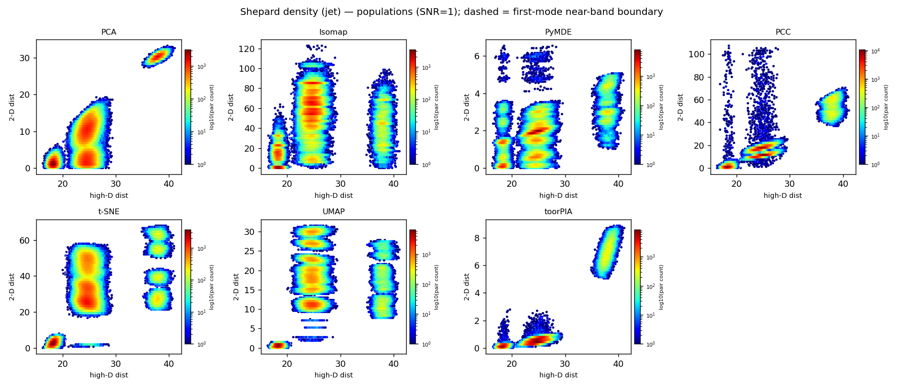
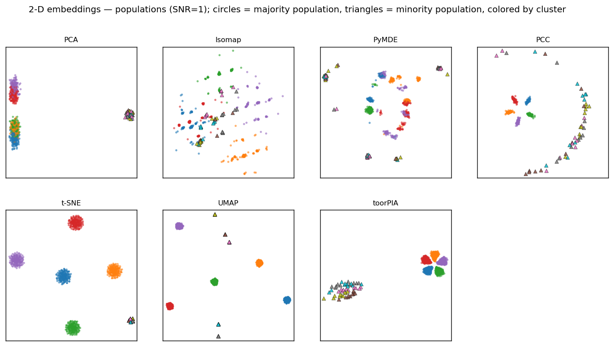
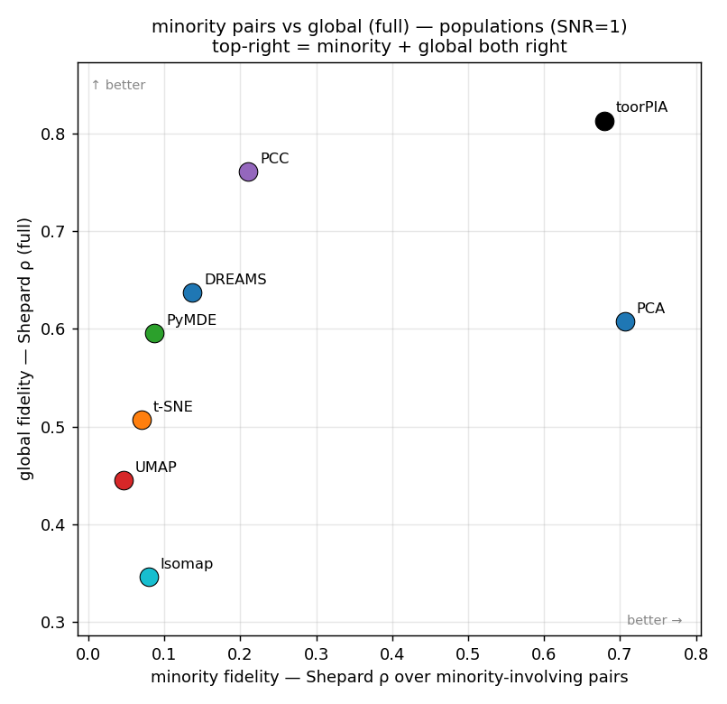
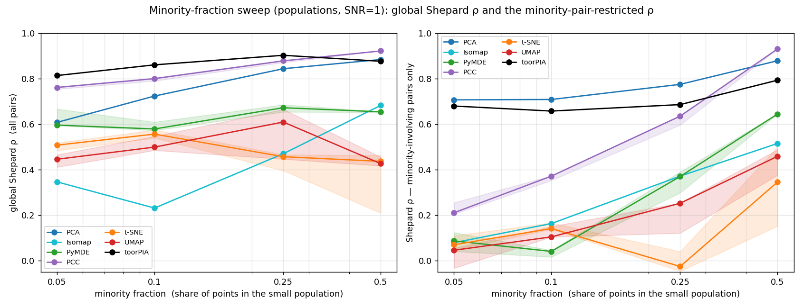
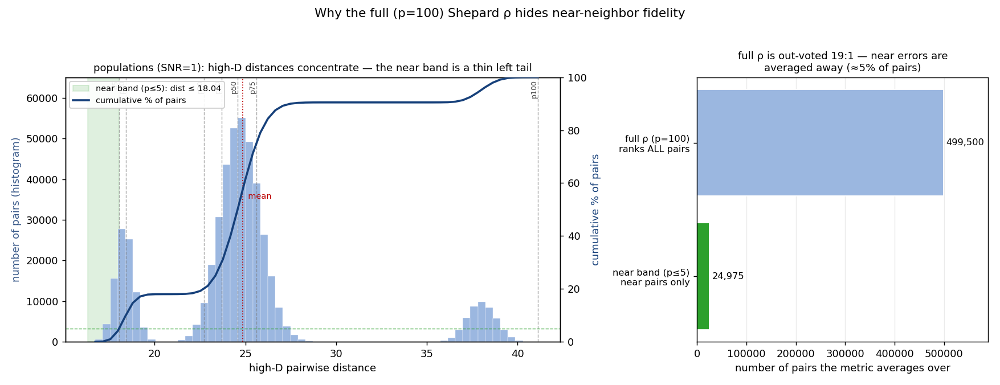
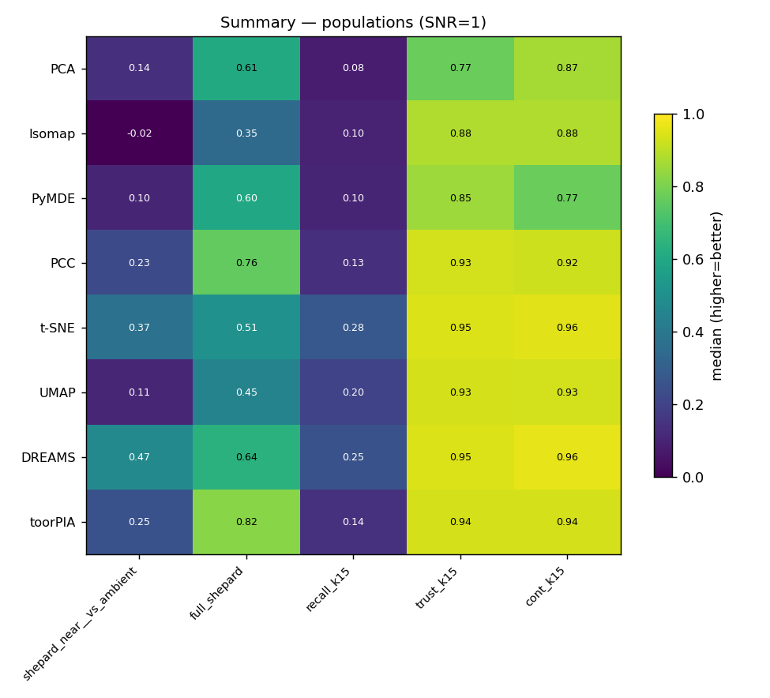
After removing the rotation/reflection/translation/scale gauge: per-point positional dispersion and the std of headline fidelity metrics across seeds. Small dispersion with ~0 metric-std means coordinates may wobble but structural fidelity is stable.
| method | snr | n_runs | position_dispersion | full_shepard__std | full_stress_fidelity__std |
|---|---|---|---|---|---|
| PCC | 1 | 3 | 0.0103 | 0.0033 | 0.0018 |
| PyMDE | 1 | 3 | 0.0130 | 0.0050 | 0.0013 |
| UMAP | 1 | 3 | 0.0064 | 0.0032 | 0.0025 |
| t-SNE | 1 | 3 | 0.0130 | 0.0134 | 0.0042 |
| toorPIA | 1 | 3 | 0.0001 | 0.0000 | 0.0000 |
| method | snr | n_runs | position_dispersion | full_shepard__std | full_stress_fidelity__std |
|---|---|---|---|---|---|
| PCC | 1 | 3 | 0.0139 | 0.0104 | 0.0010 |
| PyMDE | 1 | 3 | 0.0143 | 0.0406 | 0.0087 |
| UMAP | 1 | 3 | 0.0140 | 0.0087 | 0.0062 |
| t-SNE | 1 | 3 | 0.0121 | 0.0040 | 0.0031 |
| toorPIA | 1 | 3 | 0.0000 | 0.0000 | 0.0000 |
| method | snr | n_runs | position_dispersion | full_shepard__std | full_stress_fidelity__std |
|---|---|---|---|---|---|
| PCC | 1 | 3 | 0.0125 | 0.0041 | 0.0008 |
| PyMDE | 1 | 3 | 0.0137 | 0.0671 | 0.0031 |
| UMAP | 1 | 3 | 0.0040 | 0.0072 | 0.0020 |
| t-SNE | 1 | 3 | 0.0062 | 0.0265 | 0.0126 |
| toorPIA | 1 | 3 | 0.0000 | 0.0000 | 0.0000 |
| method | snr | n_runs | position_dispersion | full_shepard__std | full_stress_fidelity__std |
|---|---|---|---|---|---|
| PCC | 1 | 3 | 0.0136 | 0.0053 | 0.0013 |
| PyMDE | 1 | 3 | 0.0140 | 0.0314 | 0.0063 |
| UMAP | 1 | 3 | 0.0116 | 0.0065 | 0.0042 |
| t-SNE | 1 | 3 | 0.0129 | 0.0100 | 0.0021 |
| toorPIA | 1 | 3 | 0.0000 | 0.0000 | 0.0000 |
| method | snr | n_runs | position_dispersion | full_shepard__std | full_stress_fidelity__std |
|---|---|---|---|---|---|
| PCC | 1 | 3 | 0.0126 | 0.0045 | 0.0028 |
| PyMDE | 1 | 3 | 0.0133 | 0.0338 | 0.0082 |
| UMAP | 1 | 3 | 0.0082 | 0.0227 | 0.0057 |
| t-SNE | 1 | 3 | 0.0134 | 0.0140 | 0.0066 |
| toorPIA | 1 | 3 | 0.0000 | 0.0000 | 0.0000 |
Why bands (and why p=5 is the near-neighbor metric). Shepard ρ over all pairs measures global-structure reproduction, but high-dimensional distance concentration packs most pairs into a narrow far band, so the full ρ is dominated by far pairs and near-distance accuracy is buried. Cumulative cutoffs expose the near→far profile; p=5 (globally-nearest 5% of pairs) is the near-neighbor descriptive-power measure that the full ρ hides.
Fixed-radius (fair) vs variable-radius (biased). The band uses one absolute distance threshold for the whole dataset — every point is judged on the same radius. recall@k / trustworthiness / continuity instead take each point's own k nearest (a per-point variable radius) with a hard inclusion threshold; they over-penalize near-ties in dense regions and are structurally favorable to k-NN-based methods (t-SNE/UMAP). They are not a correct neighborhood evaluation and are reported as a biased reference only. (A per-point band-Shepard variant exists for contrast, but it re-introduces the variable radius, so the fixed-radius global band is primary.)
Density-weighting caveat. On non-uniform-density data the globally nearest 5% of pairs is weighted toward dense regions, so p=5 emphasizes near-structure where pairs are dense. A per-point-uniform view is the (variable-radius) per-point variant — the trade-off is point-uniformity vs fixed-radius fairness.
Non-circularity. PCC is run with the Pearson (value) loss while the primary metric is Spearman (rank) Shepard ρ — optimizing Pearson yet scoring on the rank metric is the honest, non-circular outcome.
PCC crushes dense clusters (scale collapse). PCC squeezes each dense cluster to a near-point in 2-D (within-cluster over-compression ≫1) while keeping high global ρ. Mechanistically this follows from its published objective (arXiv:2503.07609), which optimizes only distances to a sampled set of reference points, leaving non-reference points free to overlap; methods that constrain all pairwise distances keep the local scale. Note the rank-based Shepard ρ is scale-invariant and largely misses this — the over-compression metric and the Shepard density plots are what reveal it.
Outliers dataset — how it is scored. Anchored in the standard, established readings only: the Shepard density figure (high-D vs 2-D pairwise distance — the outlier-related pair blocks and their violations are directly visible), the standard band-Shepard ρ / stress blocks over exact pairwise distances, and one plain-geometry column (the same-kind pair angle, truth 0°) plus the addplot kind-assignment accuracy below — both direct readouts of the embedding pictures, with no bespoke normalization. An earlier bespoke ratio metric (OSP) computed for this dataset was retired from all reporting: it is not an established metric and its double normalization did not track the Shepard/embedding pictures; its raw columns remain in the per-run CSVs for the record.
toorPIA. Called fit_transform(..., vector_normalization=False, random_seed=seed) so it embeds the same vectors the other methods see; coordinates are cached/committed for offline reproduction (no API key needed). The installed toorpia 1.1.1 does expose a seed (vs the original spec).
Scope. This characterizes distance/structure preservation on synthetic known-structure data; it is not a claim about downstream-task superiority. When CIs overlap, no strict winner is asserted.
The monitoring scenario: the basemap is fitted on NORMAL data only (no anomaly ever seen at fit time) and new points arrive afterwards, one at a time. The added set holds cluster-anchored anomalies — each shares a normal cluster's profile in the measured features and deviates 3 Rg along new dimensions orthogonal to everything the normal data varies in (a near-duplicate pair per cluster, 5 clusters × 2), the realistic shape of a fault: a known operating state plus an effect the historical data never showed — plus 50 fresh normal points as controls. Each method maps them with its own out-of-sample operation (PCA/Isomap: transform; UMAP: seeded transform; toorPIA: server-side addplot). Two questions, in order: detection — does the anomaly land visibly outside the normal region at all (distance from the map centroid over the bulk's median radius)? — and attribution — is its direction from the centroid closest to its own source cluster's direction? The direction of an addplot point is information: it should say WHICH normal condition the anomaly departed from. The ambient high-D features resolve attribution 10/10 (the anchor signal survives SNR=1 noise), so a faithful map can too. t-SNE (sklearn), PyMDE, and PCC expose no out-of-sample operation at all — for monitoring that is itself the finding: adding data means re-fitting, and a re-fit re-arranges the map.
| method | anomaly distance ÷ bulk radius (med) | min | source-cluster attribution acc. | angle to own cluster ° (med) | same-pair angle ° (med) | bulk-control ratio (≈1 ideal) |
|---|---|---|---|---|---|---|
| PCA | 0.966 | 0.687 | 0.800 | 3.310 | 5.025 | 0.874 |
| Isomap | 1.337 | 0.755 | 0.900 | 7.203 | 1.932 | 1.011 |
| PyMDE | not operable: pymde optimizes fit coordinates; no transform | |||||
| PCC | not operable: pccdr optimizes fit coordinates; no transform | |||||
| t-SNE | not operable: sklearn TSNE has no out-of-sample transform | |||||
| UMAP | 0.971 [0.962, 1.042] | 0.281 [0.261, 0.486] | 1.000 | 3.334 [2.176, 3.429] | 1.559 [1.220, 3.801] | 0.939 [0.935, 1.003] |
| toorPIA | 5.865 | 5.233 | 1.000 | 0.589 | 0.605 | 0.978 |
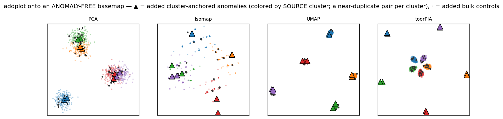
Honest notes. (1) toorPIA's addplot needs the fitted map's server-side state, so this test performs a live fit + addplot per seed and commits the two coordinate sets as a self-consistent cache pair (basemap_fit / basemap_add); the benchmark's fit cache is not reused because the server is not bit-deterministic across sessions. (2) PCA/Isomap transforms are deterministic; UMAP's is seeded. (3) A re-fit-based alternative for the methods without an out-of-sample operation (append the new data, re-fit, Procrustes-align, measure displacement) is future work — it measures a different, weaker property (map stability under re-fit), not the monitoring operation itself.
Two noise regimes. The five datasets above share one deliberately noise-friendly design: the random orthonormal projection spreads every latent factor across all D=768 ambient columns (D-fold redundancy), so the driver's isotropic noise self-averages in every pairwise distance and the ambient dimension is nominal — no curse of dimensionality operates, by construction. This supplement probes the opposite, redundancy-free extreme: 3 tight clusters live in 3 signal columns and every additional column is pure unit-variance noise (per-column standardized), so each added dimension adds noise power at fixed signal power — the effective SNR is 3/(D−3) and falls toward 0 as D grows. The sweep deliberately runs to D=768 — the main benchmark's ambient dimension: at the very same nominal D where all seven methods render the five datasets cleanly, the redundancy-free regime (effective SNR ≈ 0.004) drives six of seven to chance — the ambient dimension itself was never the difficulty; the noise geometry is. The probe is deliberately NOT a sixth registry dataset: its ground truth (the 3 signal columns) is intentionally not isometric to the ambient features. Distance fidelity is scored vs ambient — the features as given, this benchmark's primary axis — and note the ambient distances themselves become noise-dominated as D grows, so every method's full ρ declines by construction; the kNN label-accuracy column is the direct readout of whether the true clusters remain visible in the 2-D map. Read the results as regime dependence — rankings from the redundancy-rich datasets above need not transfer to sparse/irrelevant-feature regimes, and vice versa.
| method | 2-D kNN label accuracy (chance = 1/3) | global Shepard ρ — vs ambient (the features as given) | ||||||||||
|---|---|---|---|---|---|---|---|---|---|---|---|---|
| D=6 | D=40 | D=80 | D=200 | D=768 | D=2000 | D=6 | D=40 | D=80 | D=200 | D=768 | D=2000 | |
| PCA | 1.000 | 0.999 | 0.918 | 0.483 | 0.387 | — | 0.627 | 0.258 | 0.177 | 0.136 | 0.149 | — |
| Isomap | 1.000 | 0.973 | 0.757 | 0.416 | 0.354 | — | 0.741 | 0.176 | 0.115 | 0.097 | 0.088 | — |
| PyMDE | 0.990 [0.988, 0.992] | 0.555 [0.480, 0.687] | 0.412 [0.337, 0.441] | 0.328 [0.309, 0.376] | 0.328 [0.300, 0.361] | — | 0.704 [0.682, 0.717] | 0.353 [0.349, 0.360] | 0.339 [0.335, 0.343] | 0.328 [0.326, 0.336] | 0.300 [0.296, 0.307] | — |
| PCC | 0.994 [0.987, 0.996] | 0.964 [0.952, 0.967] | 0.717 [0.540, 0.752] | 0.388 [0.381, 0.466] | 0.381 [0.341, 0.382] | — | 0.778 [0.773, 0.785] | 0.610 [0.609, 0.612] | 0.580 [0.577, 0.582] | 0.575 [0.575, 0.582] | 0.538 [0.537, 0.547] | — |
| t-SNE | 1.000 | 0.982 [0.973, 0.988] | 0.850 [0.842, 0.862] | 0.506 [0.496, 0.532] | 0.383 [0.382, 0.405] | — | 0.604 [0.598, 0.614] | 0.259 [0.255, 0.262] | 0.245 [0.221, 0.249] | 0.218 [0.217, 0.228] | 0.230 [0.219, 0.241] | — |
| UMAP | 1.000 | 0.995 [0.994, 0.996] | 0.904 [0.901, 0.915] | 0.460 [0.422, 0.502] | 0.377 [0.362, 0.387] | — | 0.617 [0.617, 0.625] | 0.207 [0.198, 0.207] | 0.115 [0.113, 0.117] | 0.048 [0.046, 0.049] | 0.012 [0.009, 0.015] | — |
| toorPIA | 1.000 | 0.995 | 1.000 | 1.000 | 0.975 [0.974, 0.976] | 0.575 [0.564, 0.576] | 0.796 | 0.518 | 0.482 | 0.447 | 0.401 | 0.393 [0.393, 0.393] |
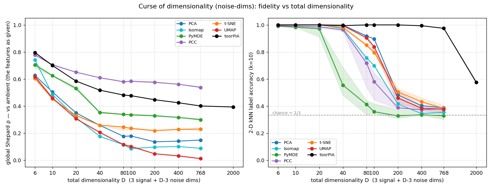
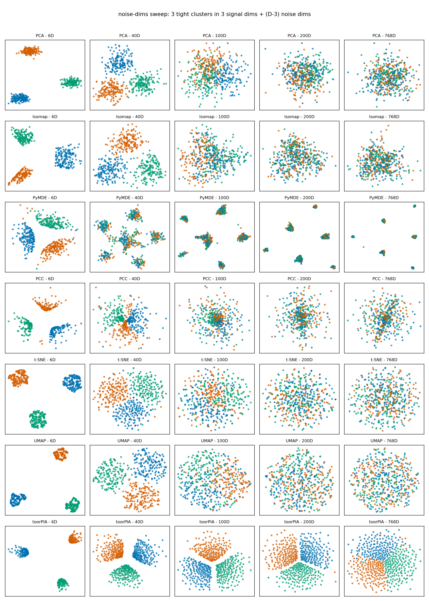
Honest notes. (1) n=1000, matching both the main benchmark and the source notebook. (2) toorPIA is additionally probed at D=2000 (effective SNR ≈ 0.0015); the other methods are already at chance well before D=768, so the extension is run for toorPIA only (the empty cells read as 'not run', not as failures). At this extreme the outcome is noise-realization dependent: across six independent noise realizations (same API, same method seed) kNN accuracy spans 0.56–0.88, median ≈0.79 — the table shows the committed sweep's realization, which happens to be the lowest of the six. (3) Bracketed ranges are bootstrap 95% CIs over seeds; deterministic methods show a point value. (4) kNN label accuracy is leave-one-out in the 2-D embedding (k=10; 3 balanced clusters, chance = 1/3). (5) Reproduce: python run/dimsweep.py --dims 6 10 20 40 80 100 200 400 768 --methods all --seeds 3 --n 1000, then python run/dimsweep.py --dims 2000 --methods toorPIA --seeds 3 --n 1000 (results merge by (dim, method, seed)).